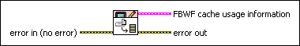

FBWF Get Cache Usage Information VI
Owning Palette: File-Based Write Filter VIs
Requires: Application Builder or Professional System
Returns the file-based write filter (FBWF) cache usage information of the current operating system. This information includes the cache size in use for files and folders, a list of files stored in the cache, and so on.

 Add to the block diagram Add to the block diagram |
 Find on the palette Find on the palette |